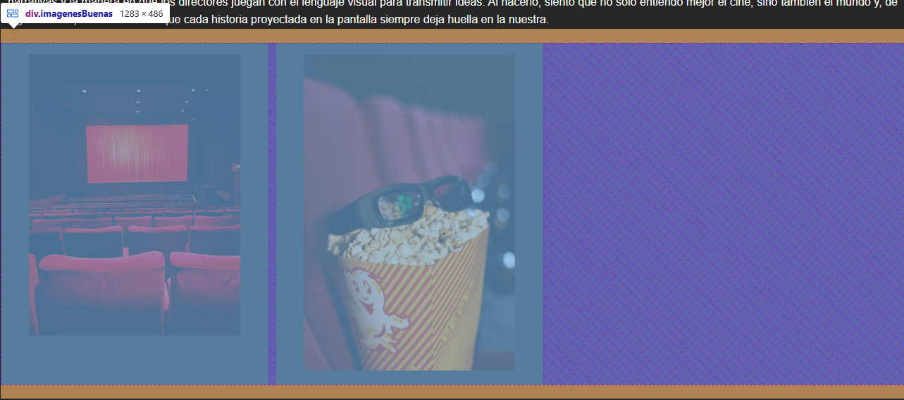
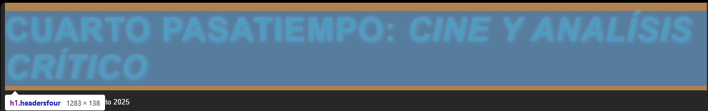
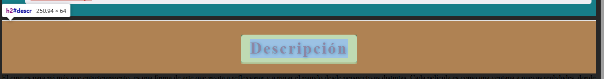
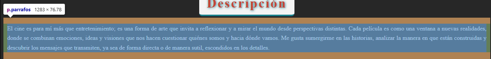
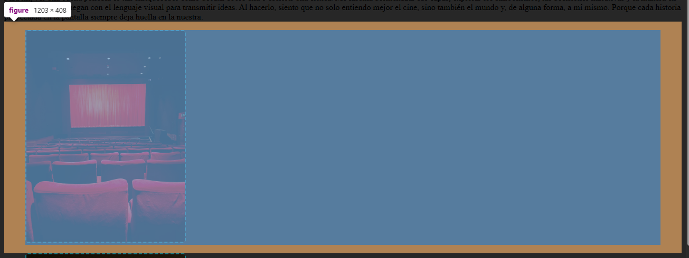
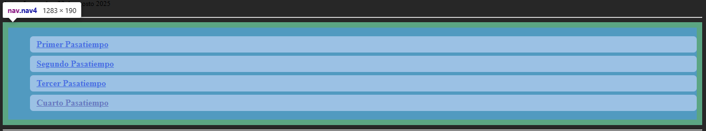
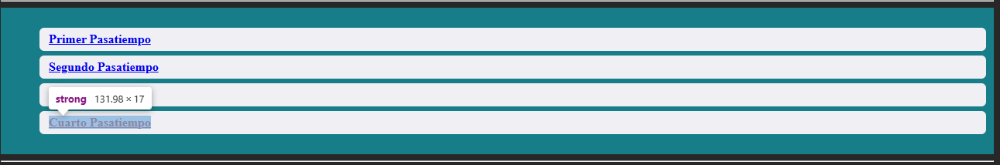
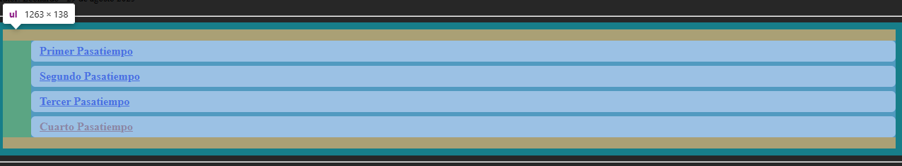
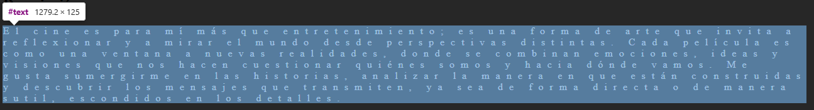
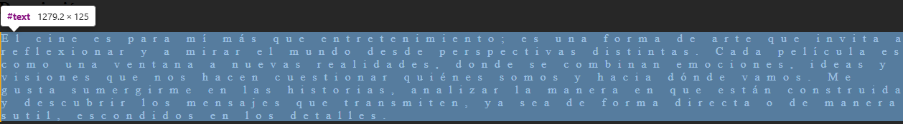

El selector universal (*) selecciona todos los elementos en el documento HTML.
Codigo:
img {
border-radius: 5px;
border: 3px solid beige;
width: 300px;
box-shadow: 0 4px 8px rgba(0, 0, 0, 0.1);
}

El selector de tipo en CSS selecciona todos los elementos de un tipo específico, como p, h1, img, etc.
Codigo
h1 {
text-shadow: 2px 2px 8px #177E89, 0 0 4px #C44536;
letter-spacing: 2px;
text-transform: uppercase;
}

Selecciona un unico elemento que contenga el id correspondido
Codigo
#descr {
color: #C44536;
font-size: 2.2em;
letter-spacing: 3px;
text-shadow: 1px 1px 6px #177E89;
background-color: #f4f4f4;
padding: 10px 20px;
border-radius: 8px;
border-bottom: 4px solid #177E89;
width: fit-content;
margin: 30px auto 20px auto;
}

Selecciona varios elementos que contenga en su declaracion la clase
Codigo
.parrafos {
line-height: 1.6;
margin-bottom: 20px;
font-family: 'Arial', sans-serif;
font-size: 16px;
text-align: justify;
padding: 0 10px;
color: #f9f9f9;
border-left: 4px solid #C44536;
background-color: #2d2d2d;
}

El selector de atributo en CSS selecciona elementos que tienen un atributo específico o un valor determinado en su etiqueta HTML.
Codigo
img[alt] {
border: 2px dashed #177E89;
}

El selector de lista en CSS generalmente se refiere a los selectores que afectan elementos de listas.
Codigo
nav ul li {
background-color: #F0EFF4;
color: #177E89;
border-radius: 6px;
margin-bottom: 6px;
padding: 6px 12px;
font-weight: bold;
transition: background 0.2s;
}
nav ul li:hover {
background-color: #C44536;
color: #fff;
}

Los selectores descendientes en CSS seleccionan elementos que están dentro de otros elementos, sin importar cuántos niveles de anidación haya.
Codigo
nav ul li strong {
color: #C44536;
text-decoration: underline;
}

El selector de hijos directos en CSS se escribe con el símbolo > y selecciona solo los elementos que son hijos directos de otro elemento, no los descendientes en cualquier nivel.
Codigo
nav > ul > li {
border-left: 5px solid #C44536;
background-color: #F0EFF4;
padding-left: 16px;
}

sirve para aplicar estilos a un elemento que está inmediatamente después de otro en el mismo nivel (hermanos).
Codigo
h2 + p {
color: #F0EFF4;
letter-spacing: 10px;
}

El selector de hermano general, solo afecta al primer inmediato.
Codigo
h2 ~ p {
border-left: 4px solid orange;
}
